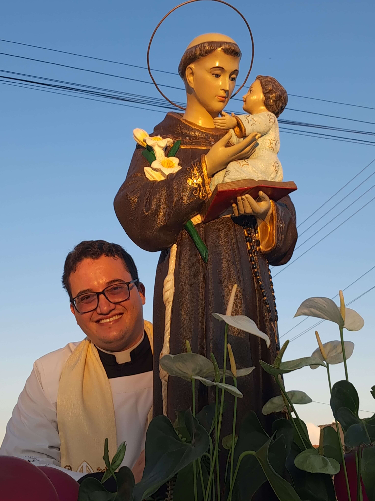
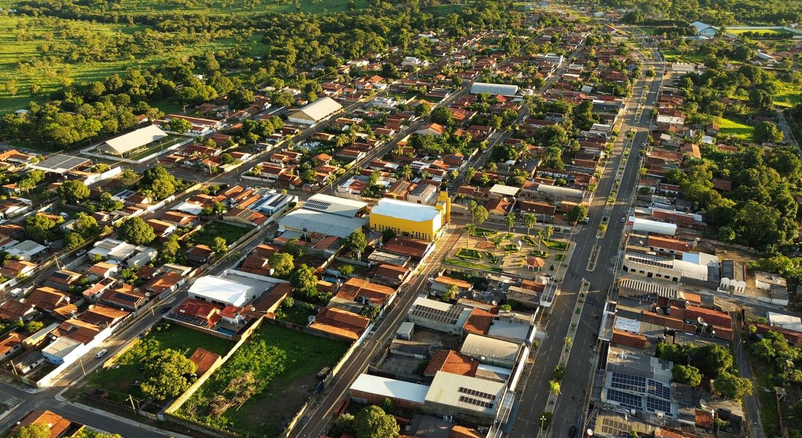
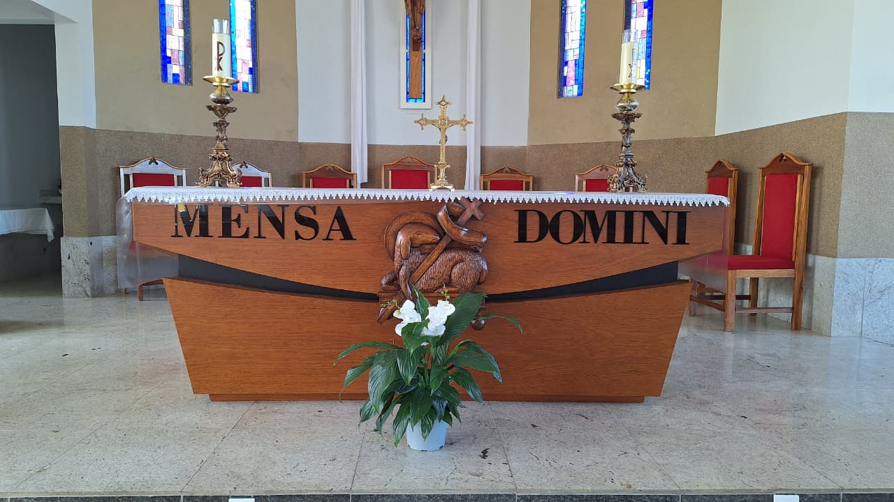
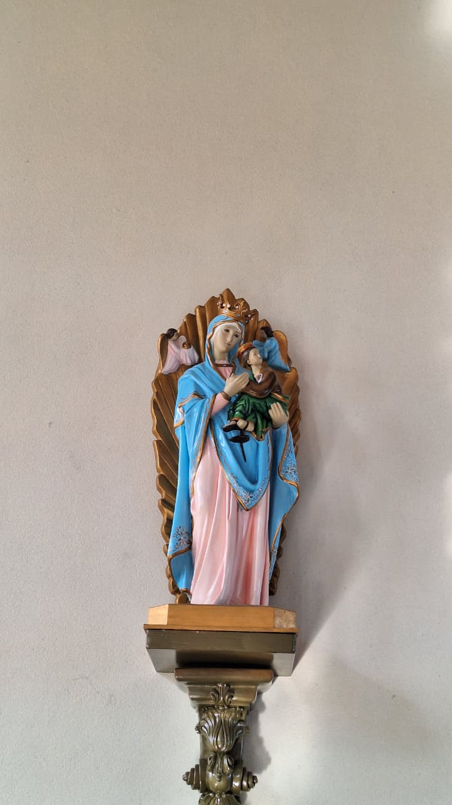
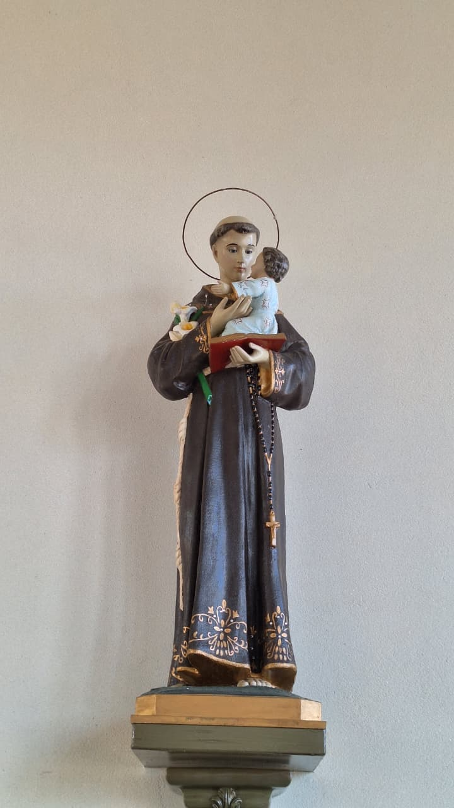
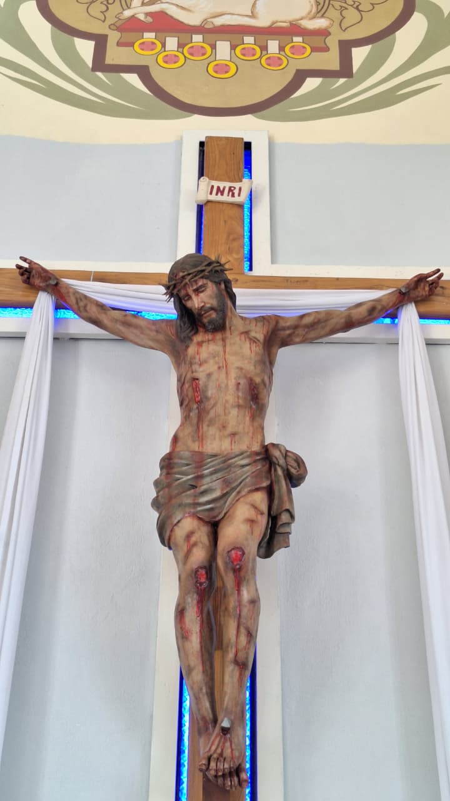
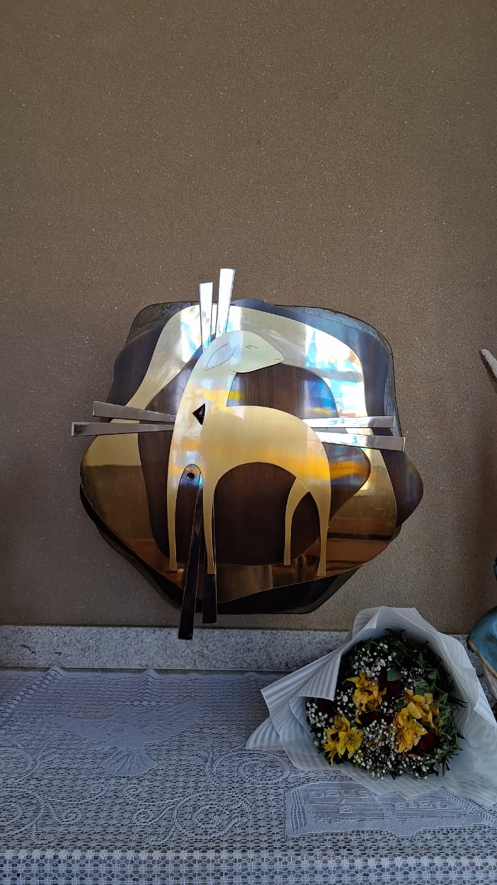
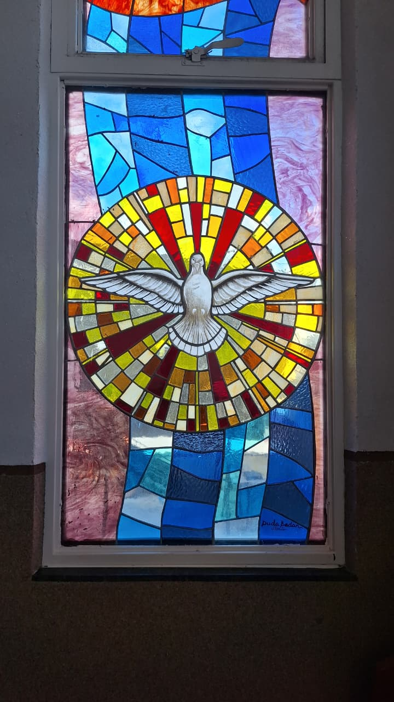
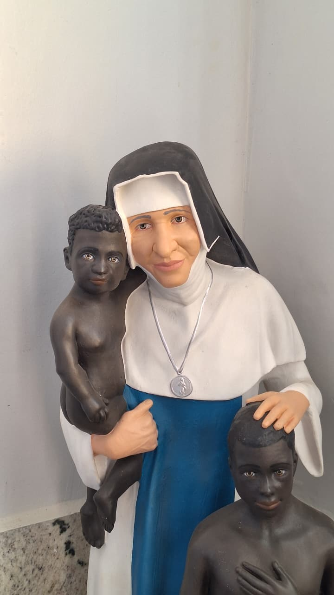
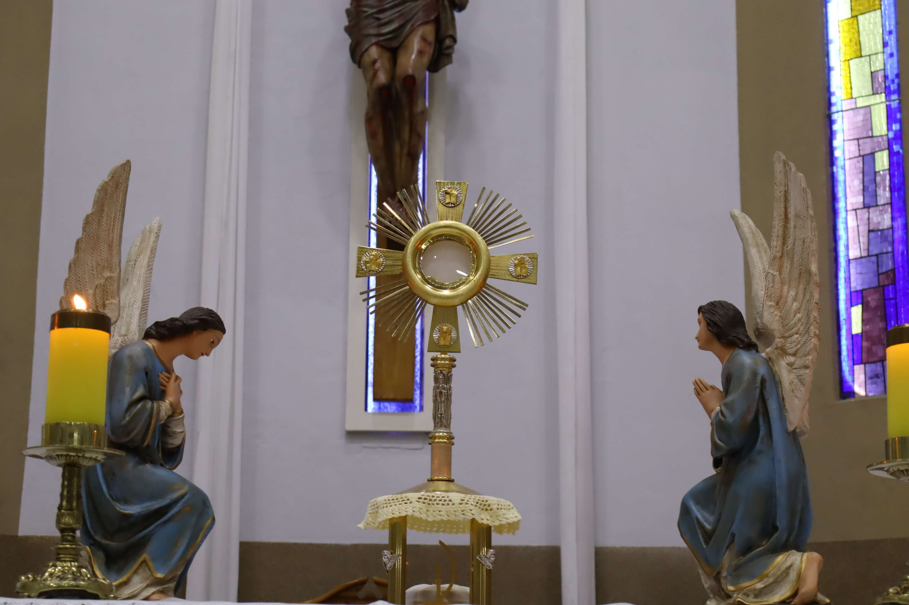

Fundação
1998
Cidade
Campos Verdes GO
Diocese
Uruaçu
Pároco
Pe. Ricardo Henrique

Palavra do Pároco
Para que um site da Paróquia? Este site nasce do desejo de Evangelizar! Eis o primeiro objetivo, utilizar deste meio
como canal de comunicação da Graça Divina a todos. Que diretamente pelas redes, chegam a Jesus e buscam conhecê-lo. E
conhecendo o Amam, se convertam e o Seguem!
E o que é Evangelizar?
Evangelizar, afinal, como diz o Documento de Puebla(1063): "evangelizar é comunicar". Comunicar o Perdão, o Evangelho, o
o Querigma, comunicar o Amor de Deus, por meio de sua Igreja.
Que o Conhecimento de Nosso Senhor por meio deste canal seja alcance para as famílias, jovens, comunidades! Que utilizando
das redes sociais para o bem, possamos aproximar mais e mais pessoas de Deus. Tantos que diante do vazio dos sites fúteis e pecaminosos
se perdem no emanharado de informações pecaminosas e se contaminam, mas é importante entender que o bem também precisa ser propagado. Que
este site alcance o seu coração e te leve a JESUS.
Ele nasce deste desejo de tornar as redes sociais lugar de alcance e encontro com Deus. Faça um bom proveito deste site, participe da vida da Paróquia,
atue nas pastorais e movimentos, busque discernir, colabore e acima de tudo Evangelize e seja Evangelizado!
Pascom pelas redes anunciando o Amor e transformando vidas.
Com minha benção e paternidade Espiritual
Pe. Ricardo Henrique
Pároco










Organização da Paróquia
Fundação da Paróquia: 19 de Janeiro de 1998 por Dom José Silva Chaves
Pároco: Pe. Ricardo Henrique
Bispo Diocesano: Dom Giovani Carlos Caldas Barroca
Forania São João Evangelista
Diocese de Uruaçu - GO
Conheça um pouco da nossa história...
Em 19 de Janeiro de 1998, Dom José Silva Chaves decretava a criação da paróquia Santo Antônio de Pádua
em Campos Verdes de Goiás, integrando assim à Diocese de Uruaçu. Desde então, tem sido
um importante centro de evangelização, fé e serviço à comunidade de Campos Verdes,
preservando a devoção ao seu padroeiro e mantendo viva a tradição, como a Trezena em Louvor a Santo Antônio de Pádua.
Assim que surgiu o garimpo de esmeraldas não se tinha casas e nem a igreja. Foi então
que um grupo de senhoras: Dalva, Chocha, dona Beta, dona Maria Batista, Dalvinha e outras
senhoras tiveram a ideia de rezar o santo terço ao domingos no chamado "Trecho", debaixo de
um pé de pequi em frente à casa do Sr. Darci.
Assim foram vários e vários domingos e a cada um aumentava o número de pessoas. Então, surgiu
a ideia de ir em Santa Teresinha procurar um padre, porém lá também não havia e encontraram
algumas irmãs que faziam as celebrações. Conversando com elas, as irmãs Cecília, Micaela e irmã
Suzana passaram a ir em Campos Verdes fazer celebrações no antigo "Titanic", mas o ambiente não
era apropiado.
Reuniram então a comunidade e construíram a Capelinha no Trecho. Após a construção, alguns padres
começaram a celebrar as Missas, como o padre Wilson, pe. Osnir e assim foram aumentando a participação
das pessoas de forma que já não comportava o número de fiéis.
Foi então que foi construída a tão sonhada matriz, com a ajuda dos fiéis, de algumas pessoas que tiveram grande
influência financeira como Dona Ivone, dona da Itaobi, o Sr. Darci e seu filho e toda a comunidade. Assim,
em janeiro de 1998 foi inaugurada a Paróquia, e a partir daí passaram pela Matriz vários padres, deixando
suas contribuições: Pe. Aldenir, Pe. Enercílio, Pe. Hélio, Pe. Carlos Magno, Pe. Carlos Vicente, Pe. Gilson
Santana, Pe. Vanderlan, Pe. Allisson, Pe. Luvanor, Pe. Valdevi e então, Pe. Ricardo Henrique.
Párocos e Administradores Paroquiais
14/11/1996 – Pe. Aldemir Franzin
17/01/1998 – Pe. Enercílio de Almeida Neto
20/12/1999 – Pe. Hélio Francisco de Faria
21/05/2004 – Pe. Carlos Magno Gonçalves Pereira
20/06/2006 – Pe. Carlos Antônio Vicente
07/02/2009 – Pe. Gilson Ferreira Santana
01/01/2010 – Pe. Gilson Ferreira Santana
10/09/2014 – Pe. Vanderlan Santana dos Santos
27/06/2016 – Pe. Álisson Alves Caixeta
21/12/2016 – Pe. Luvanor Pereira da Silva
30/01/2021 – Pe. Valdevi Augusto Freitas da Silva
30/09/2023 – Pe. Ricardo Henrique Silva (Pároco)
Informações
Capelas Urbanas
Capela Santo Antônio (Trecho Velho)
Capela Nossa Senhora Aparecida (casas populares saída para Santa Terezinha)
Capelas Rurais
Capela Nossa Senhora Aparecida (Araras I)
Capela São Sebastião (Araras II)
Capela Nossa Senhora D’Abadia (São João I)
Capela Nossa Senhora das Graças (São João II)
Capela Nossa Senhora Aparecida (Córrego dos Macacos)
Capela São Sebastião (Martinópolis)
Capela Nossa Senhora Aparecida (Petengo)
Povoado Tiúbas
Contato
Rua Ceará, nº 227
76.515-000 – Campos Verdes, GO
(62) 98139-9364 (WhatsApp)
E-mail:
paroquiacverdes.antoniodepadua
@hotmail.com